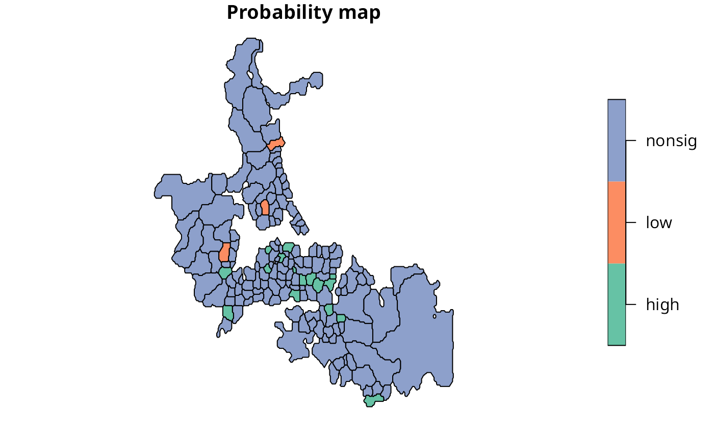

Choynowski probability map values
choynowski.RdCalculates Choynowski probability map values.
Arguments
- n
a numeric vector of counts of cases
- x
a numeric vector of populations at risk
- row.names
row names passed through to output data frame
- tol
accumulate values for observed counts >= expected until value less than tol
- legacy
default FALSE using vectorised alternating side
ppoisversion, if true use original version written from sources and iterating down totol
Value
A data frame with columns:
- pmap
Poisson probability map values: probablility of getting a more “extreme” count than actually observed, one-tailed with less than expected and more than expected folded together
- type
logical: TRUE if observed count less than expected
References
Choynowski, M (1959) Maps based on probabilities, Journal of the American Statistical Association, 54, 385–388; Cressie, N, Read, TRC (1985), Do sudden infant deaths come in clusters? Statistics and Decisions, Supplement Issue 2, 333–349; Bailey T, Gatrell A (1995) Interactive Spatial Data Analysis, Harlow: Longman, pp. 300–303.
Author
Roger Bivand Roger.Bivand@nhh.no
Examples
auckland <- st_read(system.file("shapes/auckland.gpkg", package="spData")[1], quiet=TRUE)
auckland.nb <- poly2nb(auckland)
res <- choynowski(auckland$M77_85, 9*auckland$Und5_81)
resl <- choynowski(auckland$M77_85, 9*auckland$Und5_81, legacy=TRUE)
all.equal(res, resl)
#> [1] TRUE
rt <- sum(auckland$M77_85)/sum(9*auckland$Und5_81)
ch_ppois_pmap <- numeric(length(auckland$Und5_81))
side <- c("greater", "less")
for (i in seq(along=ch_ppois_pmap)) {
ch_ppois_pmap[i] <- poisson.test(auckland$M77_85[i], r=rt,
T=(9*auckland$Und5_81[i]), alternative=side[(res$type[i]+1)])$p.value
}
all.equal(ch_ppois_pmap, res$pmap)
#> [1] TRUE
res1 <- probmap(auckland$M77_85, 9*auckland$Und5_81)
table(abs(res$pmap - res1$pmap) < 0.00001, res$type)
#>
#> FALSE TRUE
#> FALSE 74 0
#> TRUE 0 93
lt005 <- (res$pmap < 0.05) & (res$type)
ge005 <- (res$pmap < 0.05) & (!res$type)
cols <- rep("nonsig", length(lt005))
cols[lt005] <- "low"
cols[ge005] <- "high"
auckland$cols <- factor(cols)
plot(auckland[,"cols"], main="Probability map")
